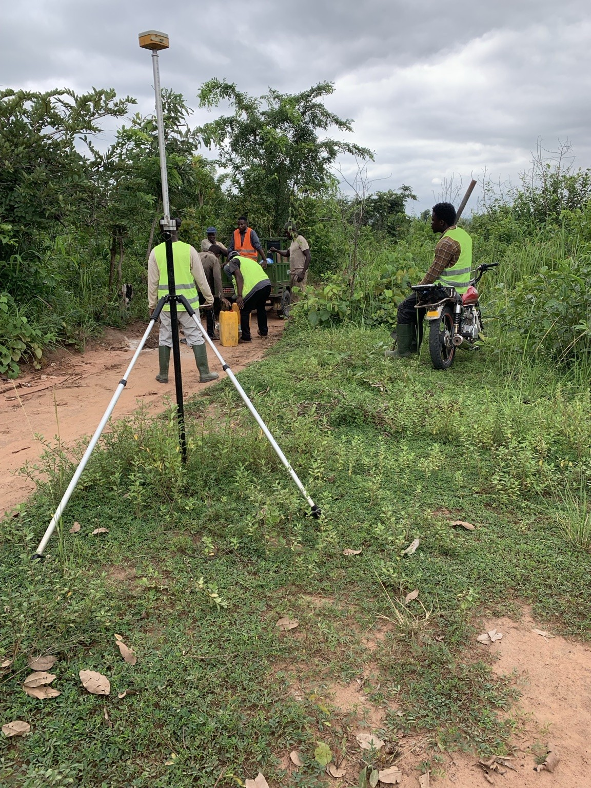
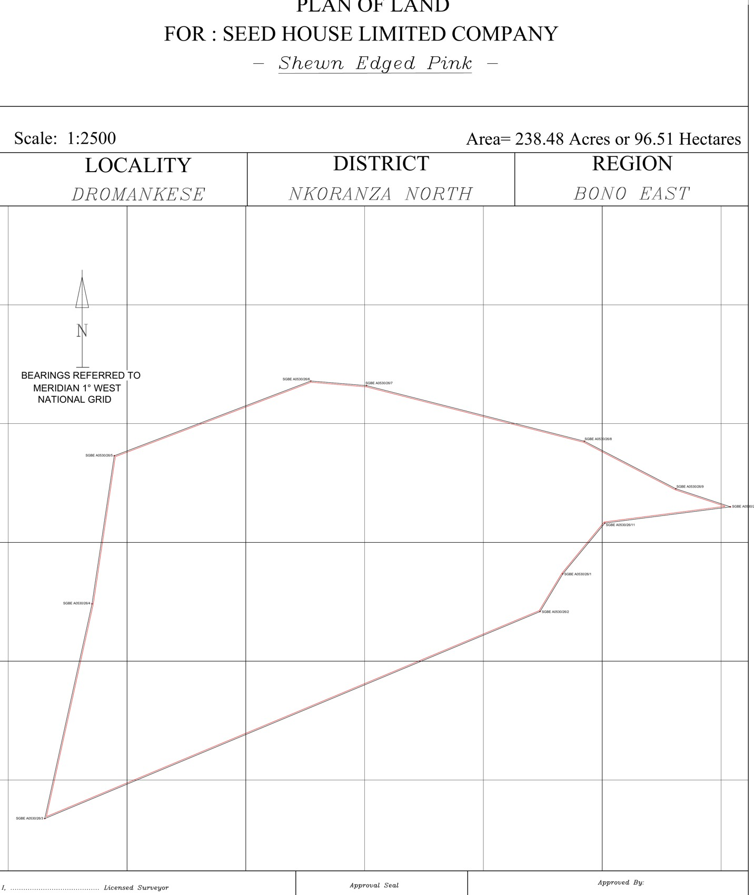

Parcel geometry
The shape and configuration created by the surveyed boundary stations.
From boundary identification and professional field measurement to coordinate processing, parcel geometry and plan preparation — Airban helps clients understand exactly what land is being surveyed and what the resulting plan represents.


A cadastral plan is a survey drawing that represents the measured geometry of a parcel of land. It is prepared from survey information and may show boundary stations, bearings, distances, coordinates, area, parcel references and other information required for the intended land-administration or documentation process.
The important point is that the plan should be the result of a properly defined and measured parcel — not an attempt to make the ground fit a drawing. At Airban, the boundary evidence comes first; the plan is the documented survey output that follows.
Depending on the survey purpose and applicable requirements, the plan can record the parcel shape, boundary stations, surveyed dimensions, bearings, coordinate references, area, orientation and relevant survey annotations. Where an approved plan is required for a statutory process, additional professional and Survey and Mapping Division requirements apply.
The exact content depends on the assignment and the required process, but these are the core survey elements clients should understand.
The shape and configuration created by the surveyed boundary stations.
Survey measurements that describe the direction and length of boundary lines.
Referenced positions for survey stations, depending on the survey framework and plan requirements.
The enclosed parcel area derived from the measured boundary geometry — not a target imposed before surveying.
Relevant plan, control, station, scale, north and survey annotations required to interpret the drawing.
Where applicable, certification and approval information required for the intended statutory use.
This is one of the most misunderstood parts of land-survey documentation in Ghana. The terms are often used interchangeably in everyday conversation, but the professional status and approval stage of the plan matter.
A survey plan prepared from professional survey information and signed and stamped by a Licensed Surveyor. It can serve important survey and documentation purposes, but Licensed Surveyor certification alone does not make it an Approved Site Plan.
A site plan that has progressed beyond Licensed Surveyor certification through the applicable Survey and Mapping Division approval process. It carries the required approval signature or seal of the Director of Survey or an authorised representative such as the Regional Surveyor.
In professional land-administration terms, this refers to formally surveyed parcel geometry used within the cadastral or title-registration framework. In practical Ghanaian usage, however, the term is often used to mean an Approved Site Plan.
A disciplined cadastral workflow moves from evidence on the ground to measured geometry and then to documentation.
Existing plans, client documents, known monuments, representatives and physical boundary information are reviewed.
The parcel being presented is identified on the ground. A survey should not invent corners merely to match a stated acreage.
Relevant boundary stations are observed with suitable survey equipment and referenced to the applicable survey framework.
Field observations are processed and reviewed to derive reliable station positions and survey geometry.
Boundary stations are plotted in sequence, checked and used to compute the enclosed parcel area.
The plan is prepared and, where required, proceeds through the applicable professional and statutory approval process.
A plan prepared and certified by a Licensed Surveyor is professionally significant, but it is not automatically an Approved Site Plan. Where the intended land-registration or statutory process requires approval, the certified plan must proceed through the applicable Survey and Mapping Division approval stage.
No — not by itself. A cadastral plan or Approved Site Plan identifies or represents the surveyed parcel geometry. It does not independently establish every legal interest in that land. Ownership and encumbrances must also be considered through the relevant land documents, searches, instruments and registration processes.
The correct plan depends on what you are trying to achieve. These are common situations where professional survey information is required or valuable.
To represent the parcel being referenced in a land instrument or registration process, subject to the applicable requirements.
Where physical occupation, old plans or missing monuments create uncertainty about the parcel limits.
To understand the parcel being bought or sold before relying only on an acreage description or informal boundary.
To provide reliable parcel geometry before architecture, engineering, subdivision or construction decisions proceed.
Where a larger parcel is being divided or parcel boundaries are being formally reorganised.
To replace unclear, incomplete or poorly reproduced survey information with a properly defined professional survey output.
Airban Engineering's Dromankese assignment involved permanent boundary monumentation, static GNSS observations, CORS-referenced processing, coordinate computation and preparation of draft cadastral plans across two large parcels in Bono East.
A stated acreage is not the same thing as a measured boundary. The survey-derived area follows from the geometry actually established and observed on the ground.
On the Dromankese project, one parcel had been described as approximately 165 acres. The boundary presented and measured in the field enclosed 235.60 acres — a difference of 70.60 acres.
Airban did not make the boundary fit the expected acreage. The field evidence established the geometry, and the acreage followed. The same principle applies whether the parcel is one residential plot or hundreds of acres.
Read: How land surveyors determine actual acreage in Ghana →The acreage is an output of the surveyed boundary. It should not be treated as the target that dictates where a surveyor places the boundary.
Good pre-field information reduces uncertainty, avoids wasted mobilisation and helps the survey team understand what needs to be verified.
Even an older plan can help identify the previous survey reference and parcel description.
Provide the documents relevant to the parcel and transaction so the survey purpose is clear.
A person who genuinely knows the boundary should be available where the limits are not already physically clear.
Share the location, access constraints and any site conditions that could affect mobilisation or fieldwork.
Airban Engineering serves landowners, developers, organisations and project teams across Ghana. Routine work is concentrated around Greater Accra, Kasoa/Buduburam and Cape Coast, with project mobilisation to other regions depending on scope.
Send Airban a clear copy and tell us what you need to achieve. We can help identify the document stage and define whether boundary verification, re-survey, approval support or another survey service is required.
Send Your Plan on WhatsAppClear answers to common Ghanaian cadastral and site-plan questions.
A Certified Site Plan is prepared, signed and stamped by a Licensed Surveyor. An Approved Site Plan has additionally passed through the applicable Survey and Mapping Division approval process and carries the required approval signature or seal of the Director of Survey or an authorised representative such as the Regional Surveyor.
Because both relate to formally surveyed parcel boundaries and land-registration processes, the terms are commonly used interchangeably in Ghana. The better way to assess the document is to check who prepared it, who signed it, whether it has been approved and what process it is intended for.
A Certified Site Plan is not the same as an Approved Site Plan. Where the registration process requires an approved plan, the certified plan must first proceed through the applicable Survey and Mapping Division approval process.
Look for the Licensed Surveyor's certification together with the applicable approval signature or seal from the Survey and Mapping Division. In some regions, including Greater Accra, approved plans may also carry a QR code or other verification feature associated with the approval record.
No. It represents the surveyed parcel geometry and its approval status. Ownership and legal interests must still be assessed through the relevant documents, searches, instruments and land-registration processes.
An old plan can be useful reference information, but Airban will first determine what field verification or re-survey is required. A new professional plan should not be created by simply tracing an unclear or unverified old drawing.
Yes, but the work may become a boundary verification or re-establishment exercise rather than simple plan preparation. Existing survey records, plans, occupation evidence and the surrounding boundary situation may need to be reviewed.